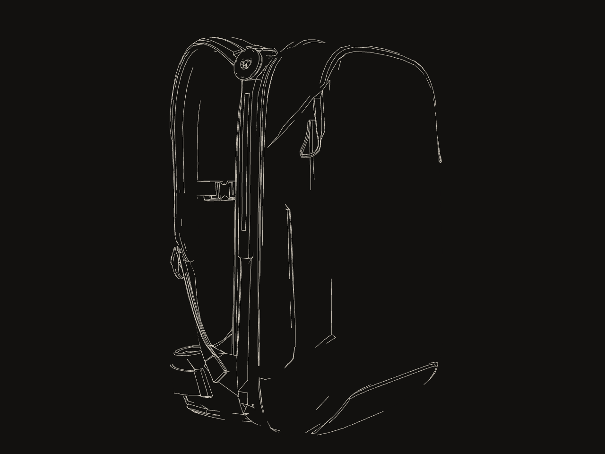
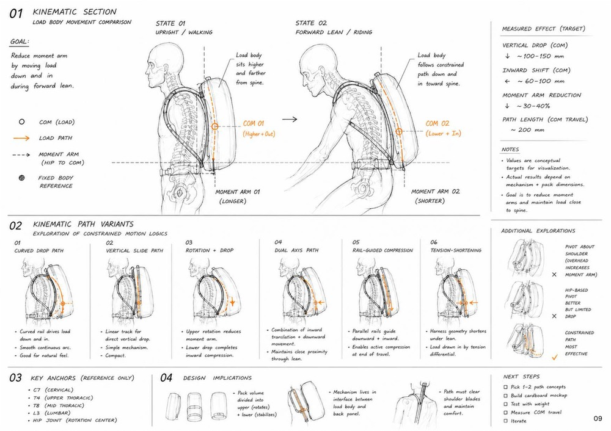
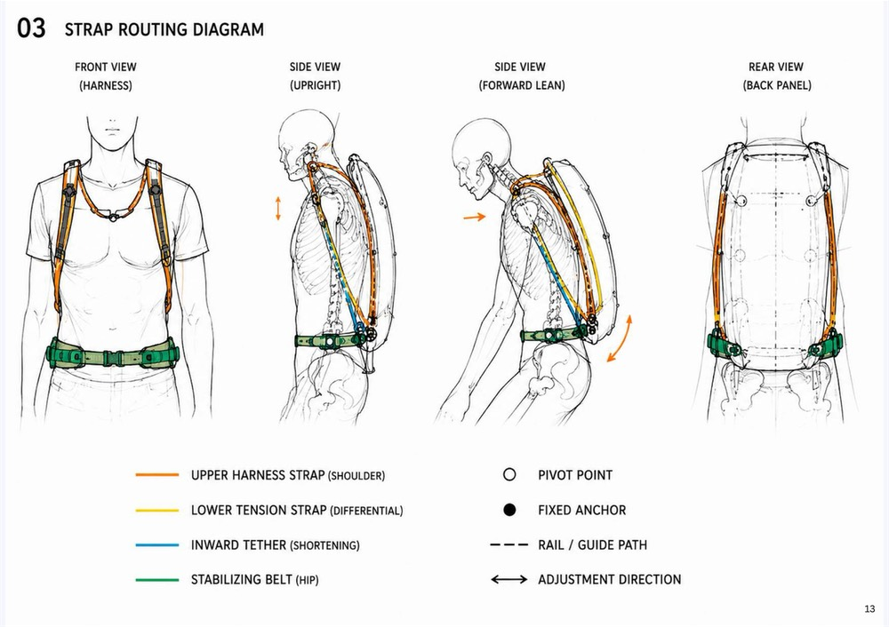

01 · Curved drop
A curved rail drives the load down and in; smooth, continuous arc.
[ LAB · AS DESIGNED ][ INVESTIGATION · AS EVIDENCED ] [+]
A wearable load-transfer system for urban e-bike commuters. Under forward lean, a tension-shortening harness is designed to draw the load body down and in toward the spine, so the hip-to-COM moment arm gets shorter.
Documentation · PDF

1A2 rail / guide channel 142 × 25 × 8 mm · channel 6.0 × 4.0 · 6061-T6Specified intent
2A7 hip belt 100 mm wide · 760–1200 mmSpecified intent
3Tension-shortening · selected from 6 path logicsDesigned
4Cardboard mock-up · load path checked in cardboard · not load ratedPrototype · cardboard-validated load path only
1A2 rail: cardboard test object, slot cut and folded · not load rated · the aluminium rail is design intentPrototype · cardboard only
2A7 hip belt: cardboard + EVA foam test object · production belt is design intentPrototype · cardboard only
3~100–150 mm drop · ~60–100 mm inward · ~30–40% moment arm: conceptual targets, not measuredConcept · target
4Edges 25° · — segments, counted live from the modelDesigned · digital model
Prototype means a cardboard fit / form / function mock-up whose load path was checked in cardboard. Not load rated. Production parts are design intent.
02 · Question
On a conventional backpack, a rider who leans forward on an e-bike swings the load’s centre of mass backward and outward. The hip-to-COM moment arm grows — and with it sway and fatigue — just when stability matters. ECS asks whether the load can follow the posture instead. Six constrained-motion path logics were compared and tension-shortening was selected: a differential strap runs over a hip-level low pivot (A4), and an inward tether (A5) is designed to draw the load body (A3) down and in along a guided rail (A2). The idea was mocked up in cardboard on a 170 cm / 61 kg rider reference, then translated, component by component, into production-intent sheets.
03 · Mechanism
Target · documentation p09
TARGET: 100–150 MM DROP · 60–100 MM INWARD · ~30–40% MOMENT-ARM REDUCTION
Concept · target, not measuredState 01 · upright / walking · COM 01 higher + out · moment arm 01 longer
Torso angle and load-body travel are drawn for illustration — nothing here is measured. The A4 dial shows the specified ±30° rotation range. The only numbers are the documentation’s conceptual targets.
04 · Inside
PartAssembly pathPrimary load pathDimension
Assembly sequence · 9 steps
Primary load path
A8, A9 and A10 (comfort, stabilisation, accessory) are omitted from the documentation’s primary load-path diagram “for clarity”.
Hardware per system
Band height = the full ± range at 12 px per mm, either side of a nominal line · angular wedge drawn at its true angle


05 · Pigment & material
Kraft · mock-up
#AA8962
≈ Sampled · corrugated cardboard PC-1 · documentation p18
Production slate
#2B3239
≈ Sampled · shell · concept render · also the live clay
Pull tab
#C1875F
≈ Sampled · the one colour on the shell · concept render
Load-path orange
#D0702F
≈ Sampled · orange load path, mechanism study plate (withheld)
Strap code · semantic, not decorative
Set aside
Prototype keys
Translation matrix ECS-MT-02-R1 · test object → designed object
| Part | Cardboard test object | Production intent |
|---|---|---|
| A1 | Corrugated cardboard 3–5 mm, layered · tape / hot glue | 500D nylon + PU · bartack · ITW Nexus ladder lock 25 mm |
| A2 | Corrugated cardboard, slot cut and folded | 6061-T6 aluminium rail, anodised black · riveted / screw fixed |
| A3 | Corrugated cardboard · EVA foam padding · tape / zip ties | 500D nylon + PU shell · HDPE sheet · closed-cell foam + 3D spacer mesh |
| A4 | Corrugated cardboard · split pin (paper fastener) · cardboard discs | GF nylon bracket · stainless pivot pin · acetal washers |
| A5 | Cardboard strip · cardboard slot adjuster | 25 mm nylon webbing · ladder lock 25 mm · bartack |
| A6 | Cardboard strip · cardboard slot adjuster · tape | 25 mm nylon webbing · ladder lock 25 mm · bartack |
| A7 | Corrugated cardboard · EVA foam · side release, taped | 500D nylon + PU · closed-cell foam + 3D spacer mesh · low-profile side release |
| A8 | Cardboard strip · side release, taped · cardboard slot | 25 mm nylon webbing · low-profile side release · ladder lock |
| A9 | EVA foam sheet · tape | 3D spacer mesh · closed-cell foam · 500D nylon + PU backing |
| A10 | Cardboard tab · tape | 25 mm nylon webbing · D-ring / cord pull / rivet |
Text from documentation p18–19. The product images on those pages are not shown: their provenance is not yet established. Prototype · cardboard, fit / form / function Specified intent · production
06 · Decisions
Pivot about shoulder
Set aside: overhead, it increases the moment arm.
Hip-based pivot
Set aside: better, but limited drop.
Constrained path
Ticked on p09 as the most effective exploration.
DesignedWalking state · out of scope
By decision: the mechanism rests neutral and works as a conventional pack. Designed to production-ready, not built as a production unit.
Glyphs redrawn after the p09 thumbnails · descriptions paraphrase the p09 notes · Designed · comparison on paper
07 · Claim ledger
| Claim | Value | Level | Qualifier |
|---|---|---|---|
| Status | Prototype · cardboard-validated load path only | Prototype · scoped | The owner’s term. A cardboard fit / form / function mock-up exists; its own sheets say “not load rated”. |
| Mechanism | Tension-shortening · A4 low pivot · A5 inward tether · A2 rail | Designed | Concept mechanism, mocked up in cardboard. |
| Path logic | 1 selected of 6 compared | Designed | Compared on p09; the selected path is detailed on p12. |
| Effect | COM drop ~100–150 mm · inward ~60–100 mm · moment arm ~30–40% · COM path ~200 mm | Concept · target | “Values are conceptual targets for visualization” (p09). Not measured. |
| Components | A1–A10 | Designed | Each has a cardboard test object and a production-intent sheet. |
| Component specs | A1 142 × 142 × 13 mm, 32 g · A2 142 × 25 × 8 mm, channel 6.0 × 4.0, 6061-T6, 28 g · A3 HDPE 240 × 170 × 2.0 mm, 110 g · A4 Ø6.0 pin, ±30°, 22 g · A5 260 mm, 18 g · A6 80–260 mm, 24 g · A7 100 mm, 760–1200 mm, 109 g · A8 200–210 mm, 16 g · A10 90 × 50 mm, 28 g | Specified intent | Production-intent sheets. Nothing built at production level. |
| Materials | 500D nylon + PU · closed-cell foam · 3D spacer mesh · HDPE · 25 mm Type-7 webbing · 6061-T6 · GF nylon · acetal / POM · stainless pin and rivets | Specified intent | Production intent. |
| Tolerances | ±0.5 · ±0.2 · ±0.1 · ±1 · ±1 · ±0.5 mm · ±1.0° | Specified intent | General · moulded · machined · webbing · stitching · pivot / hole · angular. |
| Hardware per system | M8 × 6 · M9 × 2 · M10 × 4 · M11 × 3 · M12 × 8 | Specified intent | ITW Nexus ladder locks, side releases and tri-glides; GF nylon pivot; acetal washers. |
| Rider reference | 170 cm / 61 kg / SM–M (36–38) | Prototype · fit reference | The body the cardboard mock-up was fitted to. |
| Documentation | 34 pages · six sections | Designed · document | Overview · reasoning & validation · mechanism · components · assembly · reflection. |
| Web model | ECS.glb · 8,824 vertices / 17,848 faces · edges counted live | Designed · digital model | Smooth sculpt used for the live view. Not a measured object. |
08 · Provenance, credits, revisions
| Rev | Date | Change |
|---|---|---|
| R1 | — | Component sheets A1–A10, key / legend ECS-MT-01, translation matrix ECS-MT-02, system assembly ECS-MT-03 — revision as printed |
| — | — | 34-page documentation compiled; its unscoped “validated” status is now scoped to the cardboard load-path check |
| A | 2026-10-02 | Case sheet rebuilt: eight deck images replaced by the live model and redrawn mechanism and assembly drawings; status scoped to “cardboard-validated load path only” |
09 · Next specimen
ZEWM_EXCMON
The failure was not a missed alert. A forensic systems investigation.
Open sheet 07